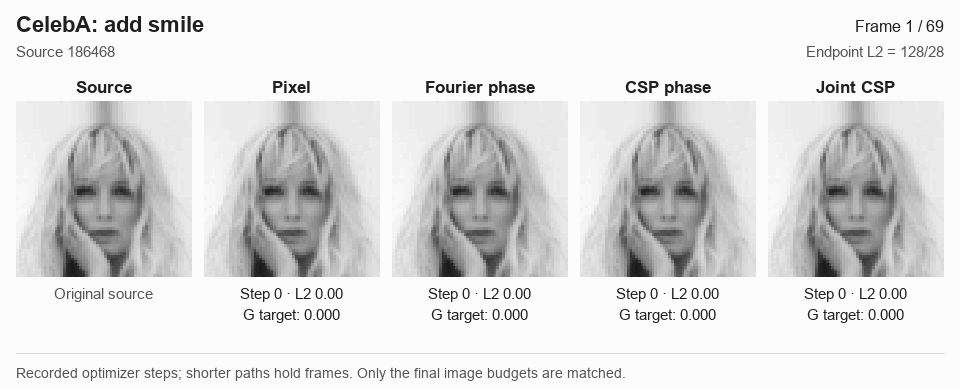
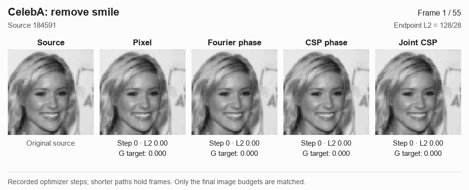
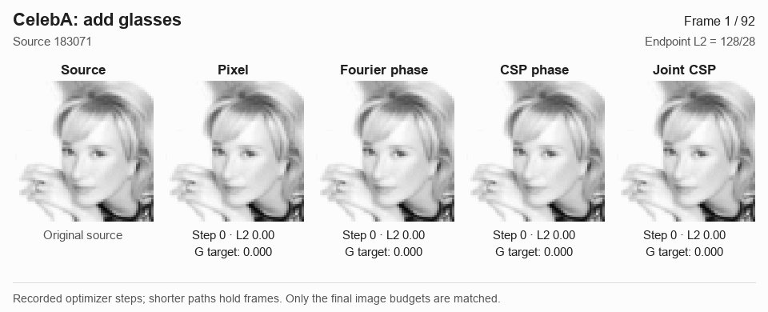
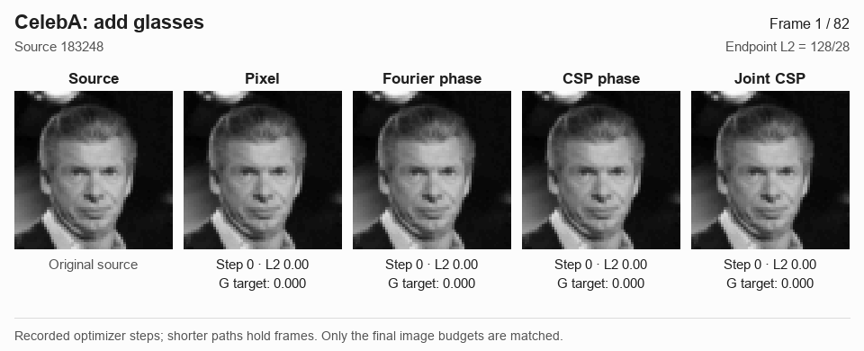
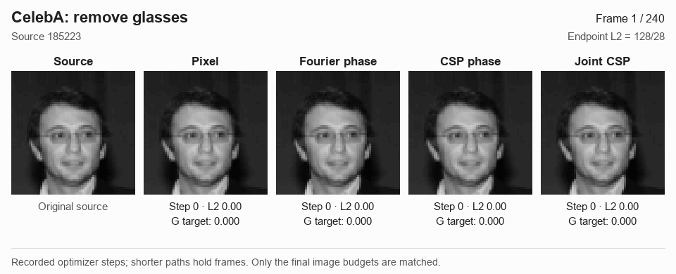

Smiles and glasses
Browse six faces across smile and glasses edits. Each animation compares Pixel, Fourier phase, CSP phase, and Joint CSP alongside the unedited source. All four methods reach the same final image distance, L₂ = 128/28.
Add smile · Source 184729 · Example 1 of 2

Swipe the figure to compare methods.
Selection and replay details
These are illustrative cases with common budget attainment, drawn from candidates originally selected by source ID, then curated for this gallery. Every replay matches its original endpoint pixels and G/O/O₂ scores exactly. The animations use actual optimizer states, without image interpolation.
All six smile and glasses examples
Each face is shown below with all four methods, so you can browse every sequence without changing the selector.
Add smile · Source 184729
Add smile · Source 186468


Remove smile · Source 184591


Add glasses · Source 183071


Add glasses · Source 183248


Remove glasses · Source 185223
